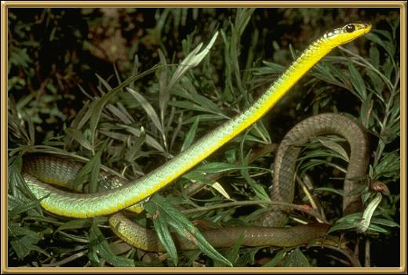

These snakes actually vary in color quite a lot, here in Australia. They range from black, brown, or blue through to an olive or a pale greyish green, however, their underside is generally a lemony yellow.
Photographer: Unknown